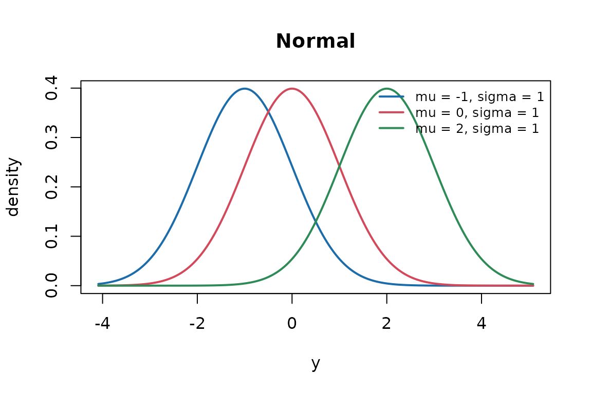
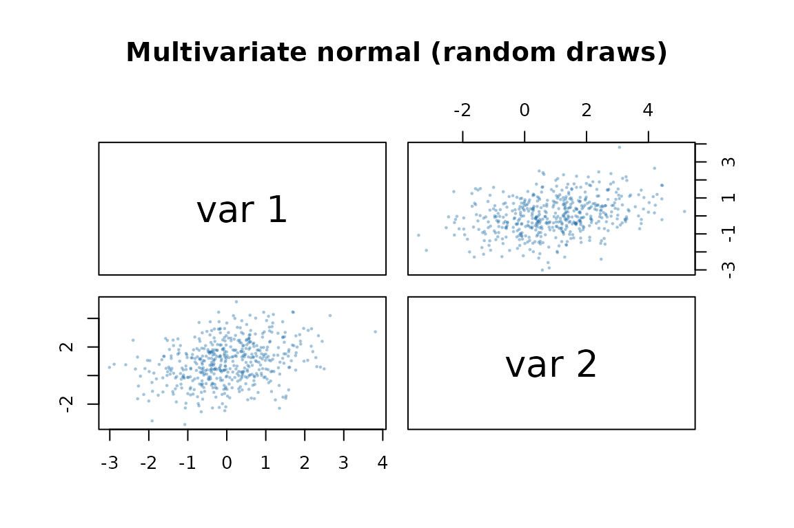

The registry
Every family is an entry of a registry that records its support,
parameters (domain, role, default link, interpretation), formulas,
moments, references and which methods and engines support it.
families() lists identifiers, optionally by category or
status; registry_table() gives one row per family;
get_family() returns the family object.
reg <- registry_table()
table(reg$category)
#>
#> bounded categorical circular
#> 35 3 10
#> count directional finite_discrete
#> 51 4 16
#> mixed multivariate ordinal
#> 2 22 10
#> positive quantile_parameterized real
#> 65 5 56
head(reg[, c("id", "category", "parameters", "status", "cdf", "stan")])
#> id category parameters status cdf
#> 1 adjacent_category_logit ordinal mu, cuts, scale validated unavailable
#> 2 arcsine bounded a, b validated analytic
#> 3 asymmetric_laplace real mu, sigma, tau validated analytic
#> 4 axial_von_mises circular mu, kappa validated numeric
#> 5 balding_nichols bounded F, p validated analytic
#> 6 bates bounded n validated analytic
#> stan
#> 1 generated
#> 2 unavailable
#> 3 generated
#> 4 unavailable
#> 5 unavailable
#> 6 unavailable
families("circular")
#> [1] "axial_von_mises" "cardioid" "dirac_comb"
#> [4] "henyey_greenstein" "mie" "nnts"
#> [7] "projected_normal" "von_mises" "wrapped_cauchy"
#> [10] "wrapped_normal"
get_family("nb2")
#> <regcomp_family negative_binomial_nb2> Negative binomial (NB2)
#> category: count, variate: scalar, discrete, status: validated
#> parameters:
#> mu positive link log [mean]
#> phi positive link log
#> formula: p(y) = C(y + phi - 1, y) (mu / (mu + phi))^y (phi / (mu + phi))^phiThe categories are "real", "positive",
"bounded" (unit interval and other bounded supports),
"count", "finite_discrete",
"ordinal", "categorical",
"circular", "directional" (spheres),
"multivariate" (vectors and matrices), "mixed"
(continuous laws with point masses, such as the Tweedie law) and
"quantile_parameterized" (metalog and J-QPD laws).
Several parameterizations of a law are separate entries. The
parameterization argument of get_family() and
regcomp() selects one by suffix:
names(get_family("gamma")$pars) # mean and coefficient of variation
#> [1] "mu" "sigma"
names(get_family("gamma", "rate")$pars) # shape and rate
#> [1] "shape" "rate"
names(get_family("weibull", "mean")$pars)
#> [1] "mu" "sigma"Capabilities
family_capabilities() reports how each operation is
provided: "analytic" (a closed form),
"algorithm" (a series, recursion, root finding or
quadrature written for that law), "numeric" (the generic
numerical fallback) or "unavailable", together with
regression and engine support. supports() answers one
question.
str(family_capabilities("conway_maxwell_poisson"))
#> List of 16
#> $ log_prob : chr "algorithm"
#> $ cdf : chr "algorithm"
#> $ quantile : chr "numeric"
#> $ rng : chr "numeric"
#> $ mean : chr "algorithm"
#> $ variance : chr "algorithm"
#> $ skewness : chr "numeric"
#> $ kurtosis : chr "numeric"
#> $ score : chr "numeric"
#> $ hessian : chr "numeric"
#> $ regression: logi TRUE
#> $ ml : logi TRUE
#> $ stan : chr "generated"
#> $ tmb : chr "unavailable"
#> $ bugs : chr "unavailable"
#> $ status : chr "validated"
supports("cauchy", "mean") # FALSE: the mean does not exist
#> [1] TRUE
supports("poisson", backend = "stan")
#> [1] TRUE
supports("cumulative_logit", "rng")
#> [1] TRUEDistribution objects
distribution() combines a family with parameter values
(scalars or vectors, recycled to a common length). Parameters are
checked against their domains and joint constraints when the object is
created.
d <- distribution("gamma", mu = 2, sigma = 0.5)
d
#> <regcomp_dist> Gamma (mean and coefficient of variation, GAMLSS GA)
#> mu = 2
#> sigma = 0.5
prob(d, c(1, 2, 3)) # density or mass
#> [1] 0.3608941 0.3907336 0.1784702
log_prob(d, c(1, 2, 3)) # log density, computed on the log scale
#> [1] -1.0191707 -0.9397292 -1.7233339
cdf(d, 2); survival(d, 2)
#> [1] 0.5665299
#> [1] 0.4334701
quantile(d, c(0.1, 0.5, 0.9))
#> [1] 0.8723848 1.8360304 3.3403915
rng(d, 5)
#> [1] 1.213062 3.214959 3.142633 2.159352 3.104412
c(mean = mean(d), variance = variance(d), skewness = skewness(d), kurtosis = kurtosis(d))
#> mean variance skewness kurtosis
#> 2.0 1.0 1.0 1.5
support(d)
#> $lower
#> [1] 0
#>
#> $upper
#> [1] Inf
#>
#> $discrete
#> [1] FALSE
try(distribution("gamma", mu = -1, sigma = 0.5))
#> Error in validate_parameters(fam, vals) :
#> Parameter 'mu' of 'gamma' must be in its positive domain; got -1.Moments that do not exist are NA with a reason; a
numerical failure is NaN with a warning of class
regcomp_numerical_warning.
mean(distribution("cauchy", mu = 0, sigma = 1))
#> Warning: The mean does not exist for 1 parameter value; NA returned.
#> [1] NA
variance(distribution("student_t", mu = 0, sigma = 1, nu = 1.5))
#> Warning: The variance does not exist for 1 parameter value; NA returned.
#> [1] NAA vector of parameters gives a vector of laws; length()
counts them and [ selects some. Parameters that describe
one event (a covariance matrix, the category probabilities of a
categorical law) are kept whole.
dv <- distribution("normal", mu = c(-1, 0, 2), sigma = 1)
length(dv)
#> [1] 3
mean(dv[2:3])
#> [1] 0 2
plot(dv)
Scores and Hessians
score() and hessian() give the derivatives
of the log density with respect to each parameter, analytically where
the family supplies them and by finite differences that stay inside the
parameter domain otherwise.
dn <- distribution("normal", mu = 0, sigma = 1)
score(dn, c(-1, 0, 2))
#> mu sigma
#> [1,] -1 1.554312e-10
#> [2,] 0 -1.000000e+00
#> [3,] 2 3.000000e+00
hessian(dn, 1)[1, , ]
#> mu sigma
#> mu -1.000311 -2
#> sigma -2.000000 -2Validation
validate_parameters("poisson", list(lambda = 2))
try(validate_parameters("poisson", list(lambda = -2)))
#> Error in validate_parameters("poisson", list(lambda = -2)) :
#> Parameter 'lambda' of 'poisson' must be in its positive domain; got -2.
validate_response(distribution("poisson", lambda = 2), c(-1, 0, 1.5, 3))
#> [1] FALSE TRUE FALSE TRUEPoint masses and lattices
Each family states its measure. Discrete laws live on a lattice (the
integers, or multiples of a step); continuous laws may carry atoms,
which prob() reports as masses at those points and the CDF
as jumps.
tw <- distribution("tweedie", mu = 1, phi = 1, power = 0.5) # Tweedie power p = 1.5
prob(tw, 0) # the atom at zero
#> [1] 0.1353353
tob <- distribution(censor("normal", lower = 0), mu = 0.5, sigma = 1)
c(prob(tob, 0), cdf(tob, -1e-9), cdf(tob, 0)) # an atom and the jump of the CDF
#> [1] 0.3085375 0.0000000 0.3085375
prob(distribution("poisson", lambda = 2), 1.5) # off the lattice: no mass
#> [1] 0Some families estimate a bound of their support. The shifted
lognormal, common for reaction times, estimates the shift
ndt below every response:
Families beyond the real line
vm <- distribution("von_mises", mu = 0, kappa = 2)
prob(vm, c(-pi, 0, pi))
#> [1] 0.009448771 0.515885412 0.009448771
dir <- distribution("dirichlet", alpha = c(2, 3, 5))
rng(dir, 2)
#> [,1] [,2] [,3]
#> [1,] 0.0956239 0.4260995 0.4782766
#> [2,] 0.2284884 0.5677892 0.2037224
mvn <- distribution("multivariate_normal", mu = c(0, 1), Sigma = matrix(c(1, 0.5, 0.5, 2), 2))
log_prob(mvn, rbind(c(0, 1), c(1, 2)))
#> [1] -2.117685 -2.689114
plot(mvn)
try(distribution("multivariate_normal", mu = c(0, 1), Sigma = matrix(c(1, 2, 2, 1), 2)))
#> Error in validate_parameters(fam, vals) :
#> Sigma must be positive definite.
mn <- distribution("multinomial", probs = c(0.2, 0.3, 0.5), size = 4)
rng(mn, 2)
#> [,1] [,2] [,3]
#> [1,] 0 2 2
#> [2,] 1 2 1
ml <- distribution("metalog", a = c(0, 1, 0.2))
quantile(ml, c(0.1, 0.5, 0.9))
#> [1] -2.021447 0.000000 2.373003Multivariate families check their structured parameters (symmetric positive definite covariance and scale matrices, Wishart degrees of freedom, orthonormal frames) and the shape of each response. Multinomial and Ewens laws take the sample size as a parameter.
Dirichlet regression takes a matrix response with one composition per
row; regcomp() expands the family to one log linked
concentration per component (alpha1, alpha2,
…), which share the main formula unless given their own (the common
parameterization of DirichletReg):
x <- rnorm(150)
Y <- cbind(rgamma(150, exp(0.5 + 0.3 * x)), rgamma(150, 1), rgamma(150, 1.5))
dd <- data.frame(x = x); dd$Y <- Y / rowSums(Y)
coef(regcomp(Y ~ x, alpha3 ~ 1, family = "dirichlet", data = dd))
#> alpha1:(Intercept) alpha1:x alpha2:(Intercept) alpha2:x
#> 0.42944315 0.29914825 -0.09330818 0.15151936
#> alpha3:(Intercept)
#> 0.35504165Links
links() lists the link functions and link()
returns one; each parameter has a default link and a set of allowed
links that regcomp() accepts through
links =.
Numerical building blocks
The log scale helpers used throughout the package are exported:
log1mexp(1e-20) # log(1 - exp(-x)) without cancellation
#> [1] -46.0517
log1pexp(800) # log(1 + exp(x)) without overflow
#> [1] 800
log_sum_exp(c(1000, 1000))
#> [1] 1000.693
log_diff_exp(log(3), log(2))
#> [1] 2.220446e-16vignette("operators") shows how to build new families
from these, and how to register your own.